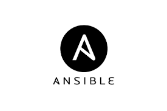
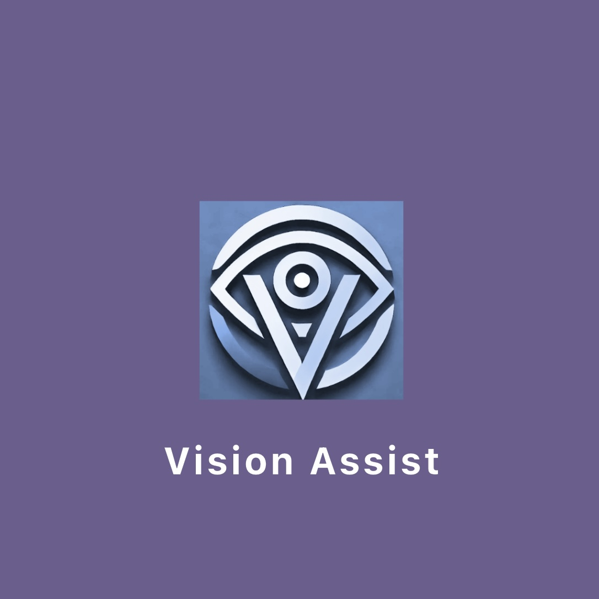
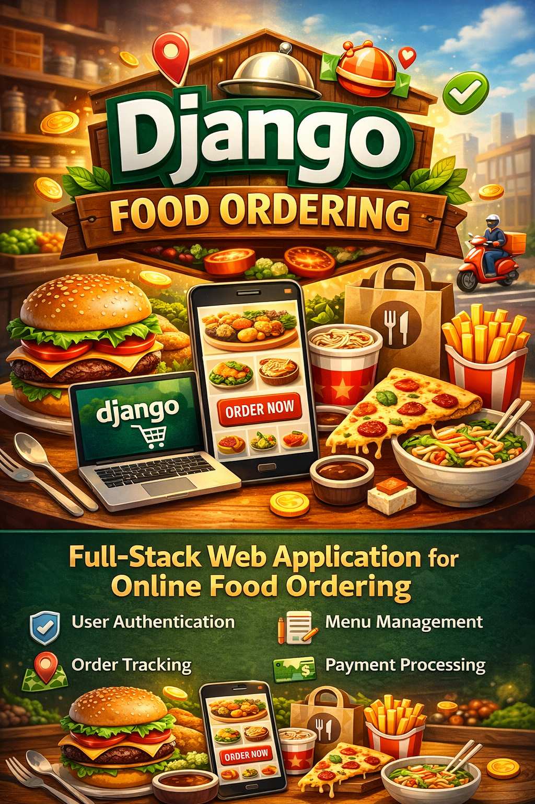

Manny Negrete
Computer science student and drone enthusiast
California State University, Northridge
Here are my latest projects that I have worked on.

NetBox Automation & Infrastructure Management
Designed and implemented infrastructure automation workflows using Python and Ansible to manage network asset lifecycles and synchronize device data into NetBox.
Python
Ansible
Linux
PostgreSQL
NetBox
Infrastructure as Code

Vision Assist
An assistive technology solution that uses computer vision to help visually impaired individuals navigate their environment and identify objects in real-time.
Dart
Flutter
Flutter TTS
Firebase
Google Maps API
Google ML Kit

Django Food Ordering System
A full-stack web application for online food ordering with user authentication, menu management, order tracking, and payment processing.
Django
Python
JavaScript
PostgreSQL

NBA Position Performance Study
Data analysis project examining the evolution of NBA positions and their statistical performance over time, with interactive visualizations.
Data Science
Python
Pandas
Matplotlib
NetBox Update & Automation
A backend automation project focused on improving the accuracy, consistency, and scalability of network asset management. Built automation pipelines to synchronize live device data into NetBox and streamline infrastructure configuration workflows.
Key Contributions
- Built scalable automation workflows using Python and Ansible (Infrastructure as Code)
- Reduced manual network configuration and update time by approximately 70%
- Developed SSH-based data extraction pipelines to collect device metadata
- Synchronized extracted data into PostgreSQL-backed NetBox instances
- Created reusable configuration templates for consistent deployments
Technologies Used
- Python for backend scripting and automation logic
- Ansible for configuration management and orchestration
- Linux-based environments
- PostgreSQL for structured asset storage
- NetBox for network source-of-truth management
Context
This project was completed as part of a professional role. All implementations shown are described at a high level to respect confidentiality and intellectual property.

Vision Assist
Vision Assist is a mobile application developed to support visually impaired individuals in navigating their environments safely and independently. The app combines real-time object detection, GPS navigation, text recognition, and voice feedback to enhance accessibility and situational awareness.
Key Features
- Real-time object recognition using an integrated ML model
- GPS navigation with route guidance via voice prompts
- Text scanning and reading functionality (OCR)
- Emergency alarm system with SMS alert capability
- Accessible interface with voice feedback and large touch targets
- Modular tab-based navigation: Object Recognition, Scan Text, GPS, Emergency
Technologies Used
- Flutter for cross-platform mobile development
- Firebase Firestore for real-time NoSQL database and user management
- TensorFlow Lite for on-device ML object detection
- Apple Maps API for iOS GPS navigation and location services
- Text-to-Speech libraries for audio feedback
- Google ML Kit for OCR and text recognition
Django + React Food Ordering App
A full-stack web application that enables users to browse menus, place orders, and track delivery statuses. Built for a local pupusa restaurant, emphasizing usability and responsive design.
Key Features
- User registration, login, and session handling
- Dynamic menu creation and updates via admin panel
- Shopping cart, order placement, and tracking
- Frontend built with React and RESTful API integration
- Basic Stripe integration for payment simulation
Technologies Used
- Django & Django REST Framework
- React for frontend UI
- PostgreSQL for relational data
- Axios for API calls
- Bootstrap for styling
Role
Designed and implemented the backend API with Django and built the frontend components using React. Focused on responsive layout and data integrity.
NBA Position Performance Analysis
An independent research project analyzing how NBA player roles and statistical contributions have evolved over the past 20 years. Explores the impact of the three-point revolution and positionless basketball.
Key Insights
- Shift in scoring trends by position since 2000
- Increased usage and efficiency in 3PT shooting
- Statistical convergence of guard and forward roles
- Value comparison via salary vs. performance metrics
Methodology & Tools
- Data scraping from NBA APIs & Basketball Reference
- Preprocessing using Pandas and NumPy
- Data visualization with Seaborn, Matplotlib, Plotly
- Machine learning (K-Means, Linear Regression)
- Jupyter Notebooks for iterative development
Role
Handled full pipeline from data acquisition to analysis and modeling. Presented findings with interactive dashboards and visual reports.
I am a computer science student at California State University, Northridge with a passion for innovative technology and problem solving. My academic journey has equipped me with a strong foundation in software development, data structures, algorithms, and machine learning.
Beyond my coursework, I'm an avid drone enthusiast and enjoy exploring the intersection of aerial photography, programming, and 3D mapping. I'm particularly interested in how computer vision and AI can transform various industries.
My goal is to build technology solutions that make a positive impact on people's lives, whether through accessibility tools, data-driven insights, or efficient web applications. I'm constantly learning new technologies and frameworks to expand my skill set.
When I'm not coding or flying drones, you can find me hiking in California's beautiful landscapes or experimenting with new tech gadgets.
Interested in collaborating, discussing opportunities, or connecting professionally?
Choose an option below.